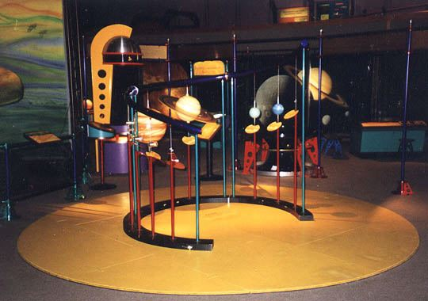

Aliens: Worlds of Possibilities

The Aliens: Worlds of Possibilities exhibit explores astronomy, planetary science, and adaptation. The robotic creatures are based on children's ideas of how creatures would need to adapt to live on worlds with different physical characteristics.
Earth World What it takes to support life on earth
Main Exhibit Part 1 Astronomy and planetary science
Main Exhibit Part 2 More astronomy exhibits
Aliens in Science Fiction Alien creatures from the world of fiction
Robotic Creatures Robotic aliens based on kids images of creature adaptations to other worlds
SETI Area How we are searching for life on other worlds
Offsite Planet Banners Planet banners located at locations around the community
Return to PSC Photos Menu
Copyright David Taylor 2001